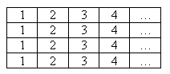
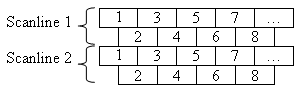
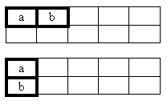

There are three basic types of antialiasing filters:
The type of filtering that can be done varies based on the scan lines (which in turn are based on the sampling mode).
Except in the case of 2×multisampling, the scan lines look like:

Each box represents a pixel.
There are three filters that can be applied (to the non-2×multisampling modes):
When doing 2×multisampling, the scan lines look a little bit different.

Notice that a single scan line effectively consists of two rows of pixels, the second row offset from the first. With 2×multisampling, there are only two filters that make sense:
The two linear filters are fairly straightforward.

The filtered color will be:
result = (a + b) / 2
The Gaussian filter works on nine pixels.

When the filter is applied at pixel e, the resulting color will be:
result = (a + 2×b + c + 2×d + 4×e + 2×f + g + 2×h + i) / 16
Guassian filters are not compatible with back-buffer scaling.
The linear filter looks like:

The resulting color will be:
result = (a + b) / 2
The Quincunx filter works differently.

When this filter is applied to the pixel at c, the resulting color will be:
result = (a + b + 4×c + d + e) / 8
Quincunx filters are not compatible with back-buffer scaling.